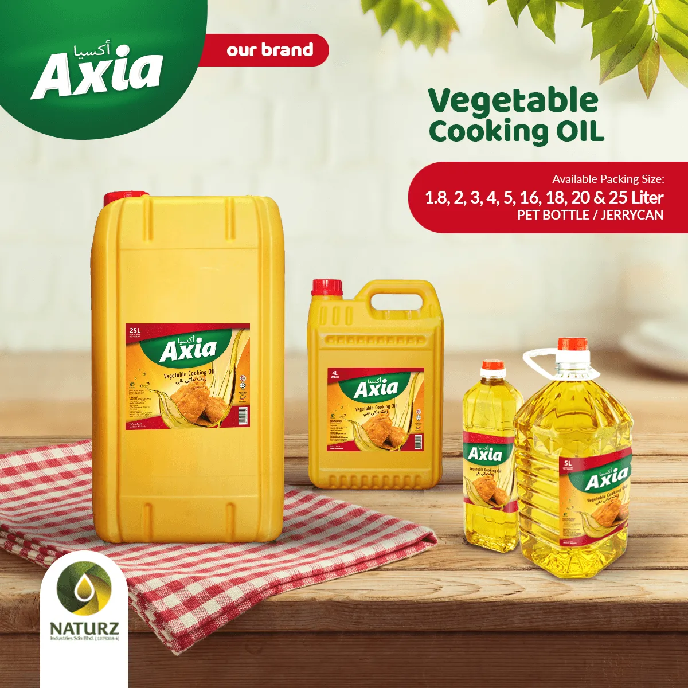

02 · Brand Promise
Best for your plate
Naturz’s best for your plate.
A clear, memorable booth message: dependable Malaysian vegetable oil products for frying, baking, cooking and industrial food applications.

A clear, memorable booth message: dependable Malaysian vegetable oil products for frying, baking, cooking and industrial food applications.
